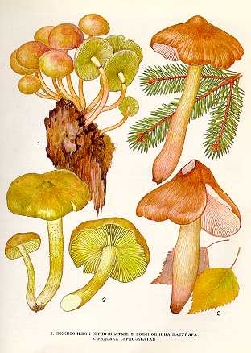

1. ЛОЖНООПЕНОК СЕРНО-ЖЕЛТЫЙ.
Растет на пнях, на земле около пней, на гнилой древесине лиственных и хвойных пород с июня по октябрь, часто большими группами.
Шляпка до
Пластинки сначала серно-желтые, потом зеленоватые, черно-оливковые, приросшие к ножке. Споровый порошок шоколадно-коричневый.
Ножка до
Гриб несъедобен.
2. ВОЛОКОННИЦА ПАТУЙЯРА.
Обитатель хвойных и лиственных лесов. Появляется в августе и сентябре в тех местах, где растут шампиньоны, колпаки кольчатые, другие съедобные грибы. Шляпка 6—9 см в диаметре, сначала колокольчатая, затем распростертая, с бугорком в центре, к старости растрескивается, у молодых грибов беловатая, затем соломенно-желтая, красноватая. Мякоть сначала белая, затем красноватая, со спиртовым запахом и неприятным вкусом. Пластинки приросшие к ножке, широкие, частые, сначала белые, затем серно-желтые, розовые. К старости коричневые, с красноватыми пятнами. Споровый порошок охряно-бурый. Споры яйцевидные, слегка почковидные.
Ножка до
Гриб смертельно ядовит.
Яда мускарина в нем в 20 раз больше, чем в мухоморе красном. Поражает вегетативную нервную систему. Симптомы отравления проявляются через 20—25 мин после приема пищи. Признаки отравления: повышение кровяного давления, голов-ная боль, головокружение, тошнота, дрожание конечностей, замедление сердечно-сосудистой деятельности. Смертельная доза свежего гриба 10—80 г.
3. РЯДОВКА СЕРНО-ЖЕЛТАЯ.
Встречается в хвойных и лиственных лесах на земле и на пнях в августе — сентябре.
Шляпка 3—10 см в диаметре, сначала коническая, с бугорком, затем плосковыпуклая, ярко-серно-желтая, в центре более темная, по краям бледная. Мякоть серно-желтая или зеленоватая, запах напоминает запах дегтя или сероводорода, вкус неприятный. Пластинки приросшие к ножке или выемчатые, широкие, толстые, серно-желтые. Споры белые, эллип-соидные или миндалевидные, неравнобокие.
Ножка 5—8 см длины, 0,7—
Гриб слабо ядовит, несъедобен из-за неприятного вкуса и запаха. Рядовку серно-желтую можно спутать с зеленушкой.